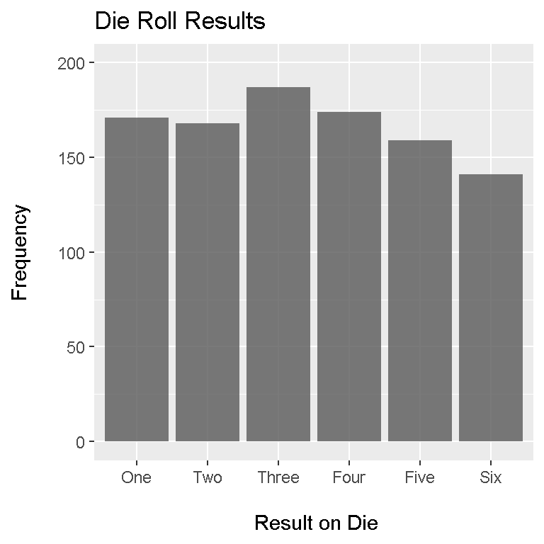

Hello. In this post, the ggplot2 package in R will be used to produce informative and nice bar graphs.
No dataset will be imported here. We will generate some simulation results this time around. We will simulate rolling a fair six sided die 1000 times using the sample() function in R.
# Making Bar Graphs in R Using ggplot2:
library("ggplot2")
# Roll a 6 sided die 1000 times and produce a bar graph of the results:
# Run die roll simulations:
result <- sample(1:6, size = 1000, replace = TRUE)
# Get counts of the die rolls:
table(result)## result
## 1 2 3 4 5 6
## 148 170 175 160 189 158
The table(result) function in R gives us the frequencies of the outcomes of this experiment.
The mode (or most frequent result) is rolling a three at 197 times. If another 1000 die rolls were made then it is not guaranteed we will replicate the same results. (The probability of replicating such results is very low.)
Now that we have our results, we need to fix / clean our data such that it is nicely formatted for graphing purposes.
In the x-axis (horizontal) of our graph we do not really want to see 1,2,3,4,5,6. It would be a bit better to use “One”, “Two” up to “Six” for each bar. We create a vector in R with the names.
die_names <- c("One", "Two", "Three", "Four", "Five", "Six")
With the outcome names, we want the corresponding counts from the experiment.
outcome_data <- rep(NA, 6)
for (i in 1:6) {
outcome_data[i] <- as.numeric(sum(result == i))
}
Next, we combine the die_names vector and the outcome_data vector into a data frame. This data frame will be ready for graphing purposes.
results_data <- data.frame(Number = factor(die_names, levels = die_names), Counts = outcome_data)
results_data## Number Counts
## 1 One 148
## 2 Two 170
## 3 Three 175
## 4 Four 160
## 5 Five 189
## 6 Six 158
We now plot our bar graph using the ggplot() function from ggplot2. The labels of One, Two up to Six are on the x-axis and the counts / frequencies are on the y-axis. A title is added and we set limits on the y-axis from 0 to 200.
# \n for newline and spacing of labels on the axes:
ggplot(data = results_data, aes(x = Number, y = Counts)) +
geom_bar(stat = "identity", alpha = 0.8) +
xlab("\n Result on Die") +
ylab("Frequency\n") +
ggtitle("Die Roll Results") +
ylim(0,200)
The following websites along with Datacamp courses have been very useful.